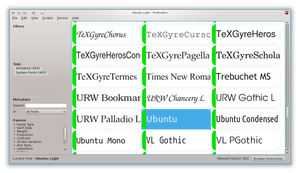
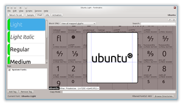
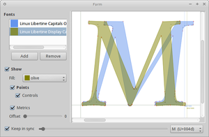

Fontmatrix
Dieser Artikel wurde für die folgenden Ubuntu-Versionen getestet:
Ubuntu 14.04 Trusty Tahr
Zum Verständnis dieses Artikels sind folgende Seiten hilfreich:
Fontmatrix  ist ein sog. Fontmanager, also ein Programm zum Verwalten von auf dem System installierten Schriften. Wer einen reinen Betrachter – auch für nicht installierte Schriften – sucht, nimmt besser einen Fontviewer.
ist ein sog. Fontmanager, also ein Programm zum Verwalten von auf dem System installierten Schriften. Wer einen reinen Betrachter – auch für nicht installierte Schriften – sucht, nimmt besser einen Fontviewer.
Das für Linux entwickelte Programm wurde mit Qt umgesetzt und ist auch für Mac OS X und Windows verfügbar. Die Programmoberfläche ist auf Englisch. Es werden folgende Formate unterstützt:
TTF - TrueType
OTF - OpenType
PS - PostScript

Funktionen¶
Taggen von Schriftarten
Ein "Spielplatz", in dem man Texte schreiben kann, um das Schriftbild in bestimmten Situationen zu testen
Extraktion von Schriften aus PDF-Dateien
Eine Vielzahl von Beispieltexten in verschiedenen Sprachen
Schriftarten via PANOSE klassifizieren
Ansehen und Vergleichen von Glyphen
Rasteransicht zum leichteren Finden von Schriftarten
Umfangreiche Suche für Tags, Gruppen, Zeichen, Schriftarten und mehr
Suche mithilfe von Bitmap-Beispiel
Hochkonfigurierbare Tastenkombinationen
Verschiedene Engines zum Rendern der Beispieltexte
Unterstützung von OpenType
Umfangreiche englische Hilfe (nicht im Standardpaket)
Python-Scripting
Installation¶
Das Programm ist unter gleichem Namen als Paket in der Paketverwaltung vorhanden, kann also leicht installiert [1] werden.
fontmatrix (universe)
 mit apturl
mit apturl
Paketliste zum Kopieren:
sudo apt-get install fontmatrix
sudo aptitude install fontmatrix
Bei Ubuntu-Varianten mit einem Anwendungsmenü startet man das Programm über den Menü-Eintrag "Grafik → Fontmatrix". Ansonsten gibt man den Programmnamen ein [2].
Bedienung¶
Startet man Fontmatrix, erscheint zunächst eine Liste mit allen installierten Schriftarten. Hat man eine Schriftart ausgewählt, kann man zwischen verschiedenen Darstellungen wechseln. Im Folgenden eine Übersicht über die meist genutzten Modi.
Sample - Beispieltexte¶
An dieser Stelle kann man sich Beispieltexte anzeigen lassen, diese können nach Belieben geändert werden. Dazu öffnet man eine Liste, die über den Schalter "Samples" aktiviert wird. In dieser können die Texte editiert, hinzugefügt oder entfernt werden.
Zudem stehen weitere Schaltflächen zu Verfügung, mit denen Schriftgröße und OpenType-Attribute gewählt werden können.
Chart - Zeichentabelle¶

In diesem Anzeigemodus wird eine Matrix dargestellt, in welcher die einzelnen Zeichen aufgeführt und benannt sind. Oben gibt es Schaltflächen zur Suche von Zeichen und Eingrenzung der Bereiche, den sog. "Areas".
Klickt man in dieser Ansicht auf ein Zeichen, wird dieses in einer großen Ansicht dargestellt, die Details bequem erkennbar macht.
Info - Informationen über Schriftart anzeigen¶
An dieser Stelle werden genauere Informationen angezeigt. Die folgende Übersicht zeigt einen kleinen Ausschnitt:
Lizenz
Version
Ersteller
Dateipfad
Versionsnummer
Unterstütze Funktionen
Activation - Stile de-/aktivieren¶
An dieser Stelle kann man einzelne Darstellungsarten oder Stile (Bold, Kursiv, mono, etc.) de-/aktivieren.
Playground¶
Möchte man die Schrift genauer testen und etwas herumspielen, dann ist der "Playground", den man über die "View" in der Menüzeile erreichen kann, genau der richtige Modus.

Compare - Schriftarten vergleichen¶
Über die Schaltfläche "View → Compare" kann man einen Modus aktivieren, so dass man bequem zwei Schriftarten vergleichen kann.
Root-Rechte¶
Wenn Fontmatrix mit Rootrechten ausgeführt wird, ist es möglich, Schriften systemweit (für alle Benutzer) zu installieren oder zu entfernen. Diese liegen im Verzeichnis /usr/share/fonts/ bzw. /usr/local/share/fonts/. Wird Fontmatrix mit Benutzerrechten ausgeführt, kann man lediglich Schriften im Verzeichnis ~/.fonts/ des Benutzers ändern.
Problembehebung¶
Schriften wiederherstellen¶
Eine Lösung ist in diesem Forumsbeitrag zu finden. Daher sollte man "Deactivate all" meiden.
 Übersichtsartikel
Übersichtsartikel- Erstellt mit Inyoka
-
 2004 – 2017 ubuntuusers.de • Einige Rechte vorbehalten
2004 – 2017 ubuntuusers.de • Einige Rechte vorbehalten
Lizenz • Kontakt • Datenschutz • Impressum • Serverstatus -
Serverhousing gespendet von